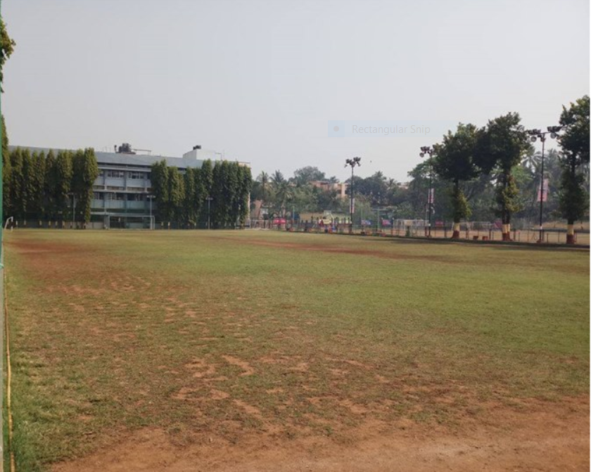

St. Dominic Savio High School, Andheri, Mumbai, is a Don Bosco Institution run by the Salesians of Don Bosco, an International Religious Organization founded by St. John Bosco. John Bosco was born on the 16 August 1815 in Italy and later was fondly know as Don Bosco.St. Dominic Savio High School, Andheri, Mumbai, is a Don Bosco Institution run by the Salesians of Don Bosco, an International Religious Organization founded by St. John Bosco. John Bosco was born on the 16 August 1815 in Italy and later was fondly know as Don Bosco. He started a number of institutions for poor and abandoned youngsters and got the help of many lay volunteers to assist him in his work for these youngsters.
The Facilities
> St. Dominic Savio complex also hosts other facilities such as Prafulta, Bal Prafulta and a boarding facility, besides the high school. Don Bosco schools are always knows for their focus on sports and extra-curricular activities. Our sports facilities are amongst the best in Mumbai and sports training an coaching is integrated in to the academic calendar.
The aim of my school

The aim of St. Dominic Savio High school (SDSHS) is to graduate responsible and productive citizens with strong critical thinking and academic skills by providing a rigorous, dynamic and comprehensive curriculum delivered in partnership with community family and a competent, qualified staff in a safe and caring environment.Teachers and staff work hard to provide the best educational experience for students. Parent partnership is high priority and is essential for student success.SDSHS has a rich tradition of outstanding student achievement and provides a sound, standards-based education, while promoting high moral character of all students.
The vision of my school
St .Dominic Savio High School stands for a holistic and integral development of the student – to help develop the student’s spirit mind and body.
The mission of my school
SPIRIT: To bring out the best in the student by fostering a loving relationship with God, self and neighbor. MIND: To foster creativity and responsible use of God’s and co-responsibility for a better world. BODY: Physical fitness through sports,games,recreational activities and healthy living.